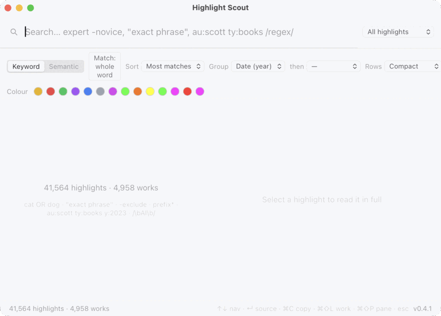

Search every reading highlight you've ever saved — instantly.
Free & open source (MIT) · macOS & Windows · your data never leaves your computer.

au:hinton, arrow to a result — instant, all from the keyboard.Sub-second keyword search over tens of thousands of highlights — no spinner, no waiting.
A global hotkey summons it; arrows, copy, open, find-related and a command palette all from the keyboard. Every shortcut is remappable.
No cloud round-trips, no account. Speed comes from a local index — and your highlights stay yours.
Any export. A mapping screen lines your columns up with title / author / text / note; it remembers the mapping.
Your device's My Clippings.txt — highlights and notes.
Our own format (and what Export writes) — script an importer for any tool.
Optional connectors. Zotero is read locally — colours and types kept; no account needed.
Re-importing the same file never makes duplicates.
Semantic search and “find related” (by meaning) are optional, via the local QMD engine if you install it.
macOS: open the .dmg and drag Highlight Scout to Applications.
The app isn't notarised yet, so the first launch is blocked — open
System Settings → Privacy & Security and click Open Anyway.
(Or in Terminal: xattr -dr com.apple.quarantine "/Applications/Highlight Scout.app".)
Windows: unzip the portable build and run highlight-scout.exe — no installer;
at the SmartScreen prompt choose More info → Run anyway.
Heads up: the downloads aren't code-signed/notarised yet, so both systems will warn you the first time (that's the steps above, not a problem with the app). They're also built automatically and not yet tested on a clean machine — if anything misbehaves, please open an issue on GitHub.